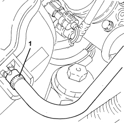
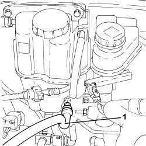
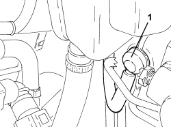
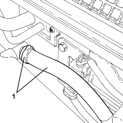

3330D26 VACUUM PIPE FOR BRAKE SERVO ASSEMBLY - R.R
- Path
- Procedures > 33 BRAKES > 3330 HYDRAULIC BRAKE SYSTEM > 3330D BRAKE VACUUM SYSTEM > 3330D26 VACUUM PIPE FOR BRAKE SERVO ASSEMBLY - R.R
- Kind
- repair procedure (removal / refitting; the operation number is the code)
- Applies to
- engines: 1.9 JTS, 2.2 JTS, 3.2 JTS, 1.9 JTD 8V, 1.9 JTD 16V, 2.4 JTD 20V; all production periods
- Interactive page
- https://sloeber94.github.io/elrnDB/#/939010803
Applies to: engines: 1.9 JTD 8V, 1.9 JTD 16V, 2.4 JTD 20V; all production periods
 Removing
Removing
 Refitting
RefittingOp. 1016A10 SOUND-PROOFING COVER - R.R
1. Disconnect the rapid connector for the vacuum intake pipe for the brake servo, vacuum pump side.
2. Release the brake servo vacuum pipe from the fastenings.
3. Withdraw the brake servo single-acting valve from the brake servo.
4. Remove the vacuum pipe assembly for the brake servo.

Applies to: engines: 1.9 JTD 8V, 1.9 JTD 16V, 2.4 JTD 20V; all production periods
Refitting
Removing- Refit the brake servo vacuum pipe assembly in its seat.
- Refit the brake servo single-acting valve in its seat on the brake servo.
- Secure the brake servo vacuum pipe using the collars.
- Connect the quick-release fitting for the brake servo vacuum intake pipe, vacuum pump side.
Applies to: engines: 1.9 JTS, 2.2 JTS; all production periods
Removing
Refitting
Applies to: engines: 1.9 JTS, 2.2 JTS; all production periods

Applies to: engines: 3.2 JTS; all production periods
Removing
Refitting1. Disconnect the single-acting valve from the brake servo.

Applies to: engines: 3.2 JTS; all production periods
1. Loosen the band and remove the brake servo vacuum pipe from the connector on the intake chamber.

Applies to: engines: 3.2 JTS; all production periods
Refitting
Removing- Place the brake servo vacuum pipe back in its housing and connect it to the connector on the intake chamber using the band.
- Connect the single-acting valve to the brake servo.